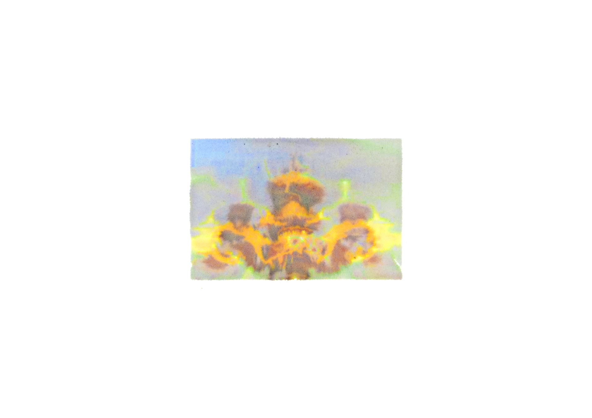

回 kuala
2022–
Experimental print and Moving image


How do we photograph our memories?
These images are varied attempts to photograph my childhood memory of a landmark in my father’s hometown. I was too young back then to take any photographs. Working with 66 found images, the only available photographs of the landmark, I used various processes to erode these pictures in hopes of revealing the image of my memory.
印象深刻的茶壶雕塑在我记忆中是朦胧的。它是跟着我爸爸回汶莱的路上一定会经过的地标。
我记得最后一次看到茶壶应该有二十年前了，听说茶壶的装饰灯已经坏了，时钟也停了。
I recall the teapot vividly as it was the main landmark of the journey back to my dad’s childhood home in Brunei.
I remember seeing the teapot over two decades ago, and rumor has it that the lights and clocks on it have already stopped working a few years ago.